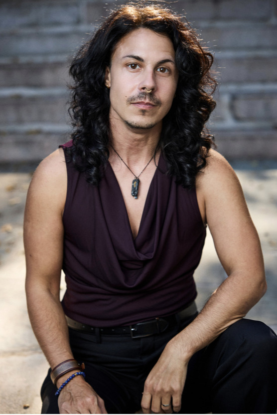

Pinboard post
Author
Spotlight: Zeyn Joukhadar — Book #008
Meet Syrian American writer Zeyn Joukhadar, whose fiction explores migration, queer history, family memory and belonging, from The Map of Salt and Stars to The Thirty Names of Night.
Zeyn Joukhadar writes across borders: geographic, historical, and the boundaries people are told their identities must fit inside. A Syrian American novelist and short-story writer, Joukhadar brings family memory, migration and queer lives into richly imagined worlds shaped by research, sensory detail and the stories people inherit.

Before writing full time, Joukhadar trained and worked in biomedical research, earning a PhD in pathobiology and completing postdoctoral fellowships. The move from science to fiction was a change of direction, but curiosity about how the world is made, mapped and remembered runs through the books.
A body of work shaped by memory and movement
Joukhadar’s debut novel, The Map of Salt and Stars, follows Nour, a Syrian girl fleeing war, alongside the story of Rawiya, a young apprentice to a medieval mapmaker. The two journeys connect present-day displacement with older histories of the Levant and North Africa. The novel won the Middle East Book Award and established Joukhadar as a writer interested in how stories can help people carry a sense of home with them.
In The Thirty Names of Night, that interest in history and belonging takes another form. Three generations of Syrian Americans are linked by birds, art and histories of queer and trans life that have been left out of the record. Joukhadar’s short fiction and essays have also appeared in publications including Electric Literature, Salon and The Paris Review.
Across these works, Joukhadar pairs careful research with imaginative storytelling. Layered timelines, vivid sensory detail, birds, maps and art help make visible the histories and inner lives that official accounts can miss. Joukhadar has described wanting to write toward agency, resilience and joy, leaving room for love and everyday care alongside grief and upheaval.
Why Zeyn is worth getting to know
Joukhadar’s fiction asks who gets to tell a community’s history, and what becomes possible when people find traces of themselves in it. The books make room for characters to change, to imagine, and to define their own relationships to home and identity. That gives readers more to follow than a plot: it offers a way to notice how memory travels between generations and how stories can help people claim a future.
For our current read, The Thirty Names of Night is QBTL Book #008.
Things to look out for as we read
- How does Joukhadar braid personal memory with larger histories?
- What do birds, maps and art make possible in the stories?
- Where do moments of joy, care or imagination sit alongside grief and displacement?
- What changes when people encounter histories that had been hidden from them?
A question to bring into the discussion
What can a story give someone that an official record might leave out?